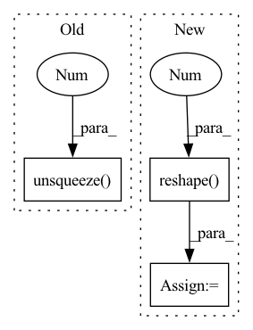

Pattern ID :24317
Before Change
ctrd_excls = torch.stack([
torch.cat([ctrds[:s, :],
mean_excls[s, u, :].unsqueeze(0 ) ,
ctrds[s+1:, :]])
for s in range(n_spkr) for u in range(n_uttr)
]).view_as(dvec_expns)After Change
dvec_rolls = torch.cat([dvecs[:, 1:, :], dvecs[:, :-1, :]], dim=1)
dvec_excls = dvec_rolls.unfold(1, n_uttr-1, 1)
mean_excls = dvec_excls.mean(dim=-1).reshape(-1 , d_embd)
indices = _indices_to_replace(n_spkr, n_uttr)
ctrd_excls = ctrd_expns.index_copy(0, indices, mean_excls)
ctrd_excls = ctrd_excls.view_as(dvec_expns)
return F.cosine_similarity(dvec_expns, ctrd_excls, 3, 1e-6)
In pattern: SUPERPATTERN
Frequency: 7
Non-data size: 3
Instances Fragment ID: 75524176
Project Name: yistlin/dvector
Commit Name: 1051873ad612f253287d1afaaac2df5571a42cdb
Time: 2020-04-05
Author: yishen992@gmail.com
File Name: modules/ge2e.py
M Class Name: GE2ELoss
N Class Name: GE2ELoss
M Method Name: cosine_similarity(2)
N Method Name: cosine_similarity(2)
M Parent Class: nn.Module
N Parent Class: nn.Module
M File Name: modules/ge2e.py
N File Name: modules/ge2e.py
M Start Line: 39
M End Line: 54
N Start Line: 41
N End Line: 53
Before Change
frames (torch.tensor [shape=(1024, time / hop_length)])
// Add dummy dimension
audio = audio.unsqueeze(0 )
// Resample
if sample_rate != 16000:
audio = torchaudio.transforms.Resample(After Change
stride=(1, hop_length))
// shape=(batch * time / hop_length, 1024)
frames = frames.transpose(1, 2).reshape( -1, 1024 )
// Normalize
frames -= frames.mean(dim=0, keepdim=True)
std = frames.std(dim=0, keepdim=True) Fragment ID: 75524178
Project Name: maxrmorrison/torchcrepe
Commit Name: 761068537065bd9163e43dcb33f740e6daa69fb4
Time: 2020-06-03
Author: maxrmorrison@gmail.com
File Name: torchcrepe/core.py
M Class Name: AnonimousClass
N Class Name: AnonimousClass
M Method Name: preprocess(3)
N Method Name: preprocess(3)
M Parent Class:
N Parent Class:
M File Name: torchcrepe/core.py
N File Name: torchcrepe/core.py
M Start Line: 111
M End Line: 126
N Start Line: 146
N End Line: 155
Before Change
r = torch.norm(dz, dim=list(range(1, self.z_0.dim())))
h_arr = beta / (torch.abs(self.alpha) + r)
h_arr_ = -beta * r / (torch.abs(self.alpha) + r) ** 2
z_ = z + h_arr.unsqueeze(1 ) * dz
log_det = (self.d - 1) * torch.log(1 + h_arr) + torch.log(1 + h_arr + h_arr_)
return z_, log_det
After Change
h_arr_ = -beta * r / (torch.abs(self.alpha) + r) ** 2
z_ = z + h_arr * dz
log_det = (self.d - 1) * torch.log(1 + h_arr) + torch.log(1 + h_arr + h_arr_)
log_det = log_det.reshape(-1 )
return z_, log_det
Fragment ID: 75524168
Project Name: vincentstimper/normalizing-flows
Commit Name: 2e3c8bac852694af68f42ff283b2d834aa19bdb9
Time: 2022-12-19
Author: vincent.stimper@gmail.com
File Name: normflows/flows/radial.py
M Class Name: Radial
N Class Name: Radial
M Method Name: forward(2)
N Method Name: forward(2)
M Parent Class: Flow
N Parent Class: Flow
M File Name: normflows/flows/radial.py
N File Name: normflows/flows/radial.py
M Start Line: 40
M End Line: 43
N Start Line: 40
N End Line: 45
Before Change
// [batch_size, max_item_length, num_float_field, embed_dim]
float_embedding = self.float_embedding_table[type](index)
float_embedding = torch.mul(float_embedding, float_fields.unsqueeze(-1 ) )
return float_embedding
After Change
if type == "item":
embedding_shape = float_fields.shape[:-1] + (-1,)
float_fields = float_fields.reshape(-1 , float_fields.shape[-2], float_fields.shape[-1])
float_embedding = self.float_embedding_table[type](float_fields)
float_embedding = float_embedding.view(embedding_shape)
else:
float_embedding = self.float_embedding_table[type](float_fields)
Fragment ID: 75524169
Project Name: rucaibox/recbole
Commit Name: 3ea75a6e4e9102223ea8fb80f9880b2bb423fbf1
Time: 2022-07-16
Author: 1204216974@qq.com
File Name: recbole/model/layers.py
M Class Name: ContextSeqEmbAbstractLayer
N Class Name: ContextSeqEmbAbstractLayer
M Method Name: embed_float_fields(4)
N Method Name: embed_float_fields(4)
M Parent Class: nn.Module
N Parent Class: nn.Module
M File Name: recbole/model/layers.py
N File Name: recbole/model/layers.py
M Start Line: 917
M End Line: 932
N Start Line: 955
N End Line: 966
Before Change
// Note that the resulting tensor is still slightly too large
// that gets remedied in the for-loop after
// Also, indices needs the unsqueeye to fill the missing dimension
res = (random_uni + indices.unsqueeze(1 ) ) * dy
// Note this loop is tricky to vectorize as cubes have different N
for idx, N in enumerate(nevals):After Change
// Note that the resulting tensor is still slightly too large
// that gets remedied in the for-loop after
// Also, indices needs the unsqueeye to fill the missing dimension
indices = indices.reshape( indices.shape[0], 1 , indices.shape[1])
res = (random_uni + indices) * dy
// Note this loop is tricky to vectorize as cubes have different N
for idx, N in enumerate(nevals): Fragment ID: 75524171
Project Name: esa/torchquad
Commit Name: c0416f000695acb4e372889f4cf60af61a3b25aa
Time: 2022-03-14
Author: ga84muv@mytum.de
File Name: torchquad/integration/vegas_stratification.py
M Class Name: VEGASStratification
N Class Name: VEGASStratification
M Method Name: get_Y(2)
N Method Name: get_Y(2)
M Parent Class:
N Parent Class:
M File Name: torchquad/integration/vegas_stratification.py
N File Name: torchquad/integration/vegas_stratification.py
M Start Line: 138
M End Line: 159
N Start Line: 155
N End Line: 177
Before Change
if self.output_last:
return outputs[:, -1, :].unsqueeze(1).unsqueeze(-1)
else:
return outputs.unsqueeze(-1 )
def get_data_feature(self):
return self.data_feature
After Change
outputs = None
for i in range(time_step):
input = torch.squeeze(torch.transpose(inputs[:, i:i + 1, :, :], 2, 3)).reshape( batch_size, -1 )
Hidden_State, Cell_State, gc = self.step(input, Hidden_State, Cell_State)
// gc: [batch_size, out_features * K]
if outputs is None:
outputs = Hidden_State.unsqueeze(1) // [batch_size, 1, out_features] Fragment ID: 75524172
Project Name: libcity/bigscity-libcity
Commit Name: 9025c0e156edb77a5feff984a18ae9fb8a537b47
Time: 2021-02-24
Author: 59010369+NickHan-cs@users.noreply.github.com
File Name: trafficdl/model/traffic_speed_prediction/TGCLSTM.py
M Class Name: TGCLSTM
N Class Name: TGCLSTM
M Method Name: forward(2)
N Method Name: forward(2)
M Parent Class: AbstractModel
N Parent Class: AbstractModel
M File Name: trafficdl/model/traffic_speed_prediction/TGCLSTM.py
N File Name: trafficdl/model/traffic_speed_prediction/TGCLSTM.py
M Start Line: 134
M End Line: 153
N Start Line: 135
N End Line: 152
Before Change
r = torch.norm(dz, dim=list(range(1, self.z_0.dim())))
h_arr = beta / (torch.abs(self.alpha) + r)
h_arr_ = -beta * r / (torch.abs(self.alpha) + r) ** 2
z_ = z + h_arr.unsqueeze(1 ) * dz
log_det = (self.d - 1) * torch.log(1 + h_arr) + torch.log(1 + h_arr + h_arr_)
return z_, log_det
After Change
h_arr_ = -beta * r / (torch.abs(self.alpha) + r) ** 2
z_ = z + h_arr * dz
log_det = (self.d - 1) * torch.log(1 + h_arr) + torch.log(1 + h_arr + h_arr_)
log_det = log_det.reshape(-1 )
return z_, log_det
Fragment ID: 75524174
Project Name: vincentstimper/normalizing-flows
Commit Name: d45d9459d28e021f7b002aac961f1a88b75173a2
Time: 2022-11-10
Author: vincent.stimper@gmail.com
File Name: normflows/flows/radial.py
M Class Name: Radial
N Class Name: Radial
M Method Name: forward(2)
N Method Name: forward(2)
M Parent Class: Flow
N Parent Class: Flow
M File Name: normflows/flows/radial.py
N File Name: normflows/flows/radial.py
M Start Line: 40
M End Line: 43
N Start Line: 40
N End Line: 45